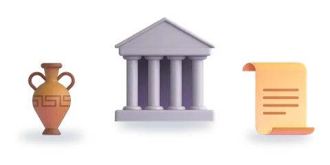
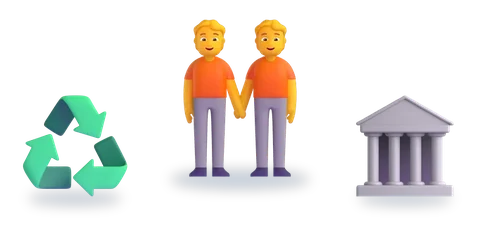
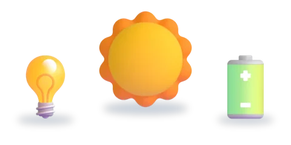
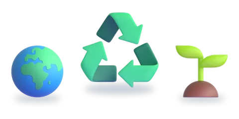

المستوى السادس
ست وحدات، لكلّ وحدة خمسة أسابيع
اختر الوحدة، ثمّ الدرس.

الوحدة 1حضارات العالم3 دروس
الوحدة 2المواطنة والسلوك المدني3 دروس- الوحدة 3العلم والتكنولوجيا4 دروس

الوحدة 4الطاقة في حياتنا4 دروس
الوحدة 5التحديات المعاصرة والبيئة4 دروس الوحدة 6الفنون والأدب7 دروس
الوحدة 6الفنون والأدب7 دروس إثراءدروس الإثراء5 دروس
إثراءدروس الإثراء5 دروس
الرسوم: Twemoji (CC-BY 4.0) وFluent Emoji من Microsoft (MIT). الأصوات: صوت عربي اصطناعي.